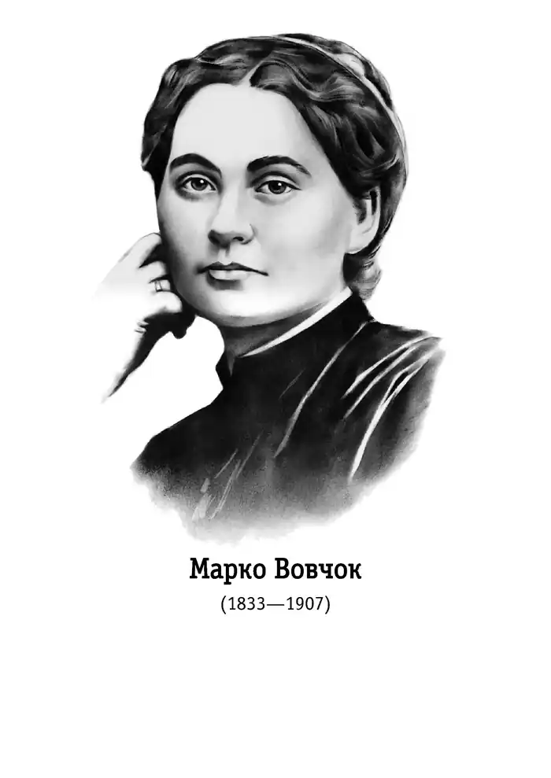
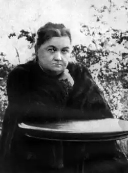

МАРКО ВОВЧОК
(1833—1907)
Народилася Марко Вовчок (літературний псевдонім Марії Олександрівни Вілінської) 10 (22) грудня 1833р. в маєтку Єкатерининське Єлецького повіту Орловської губернії у збіднілій дворянській сім'ї. Виховувалася в приватному пансіоні в Харкові. На формуванні поглядів письменниці позначилося тривале перебування в інтелігентних сім'ях родичів, зокрема батьків Д. І. Писарєва (пізніше — видатного критика й близького друга письменниці). В салоні її тітки К. П. Мардовіної в Орлі збиралися відомі письменники й фольклористи. Там Марія познайомилася з майбутнім своїм чоловіком, українським фольклористом і етнографом О. В. Марковичем, який відбував заслання в Орлі за участь у діяльності Кирило-Мефодіївського товариства. Проживаючи в 1851 — 1858 рр. у Чернігові, Києві, Немирові на Вінниччині, Марія Олександрівна досконало вивчила життя, культуру, мову українського народу. Пізніше у Петербурзі (1859) вона вже як автор збірки "Народні оповідання" потрапляє в коло таких літераторів, як Т. Шевченко, І. Тургенев, М. Некрасов, О. Плещеев, О. Писемський, польський поет і драматург Едуард Желіговський. По-дружньому прийняв письменницю також гурток українських культурних діячів у Петербурзі, зокрема колишні кирило-мефодіївці В. Білозерський, М. Костомаров, а також П. Куліш, який ще до того редагував і видавав її твори. Під час перебування в 1859 — 1867 рр. за кордоном (Німеччина, Швейцарія, Італія і переважно Франція) Марко Вовчок зустрічається з Д. Менделєєвим, О. Бородіним, І. Сєченовим. При сприянні І. Тургенева відбулося її знайомство з О. Герценом, Л. Толстим, Жюлем Верном. Особливу роль у формуванні ідейно-естетичних поглядів Марка Вовчка відіграв М. Добролюбов. Зустрічалася Марко Вовчок з чеськими письменниками — Й. Фрічем, Я. Нерудою, була близькою до кола польських літераторів і революційних емігрантів. Письменниця бере участь у розповсюдженні в Росії революційних видань Герцена, організовує для "Колокола" матеріали політично-викривального характеру. Після повернення з-за кордону Марко Вовчок зближується з видавцями "Отечественных записок" М. Некрасовим, М. Салтиковим-Щедріним, Г. Єлисеєвим, веде в цьому журналі рубрику зарубіжної літератури, публікує свої оригінальні твори й переклади. Збірка перших творів Марка Вовчка, написаних у немирівський період життя, вийшла в Петербурзі під назвою "Народні оповідання" (1857). У Немирові написані більшість її перших оповідань російською мовою (збірка "Рассказы из народного русского быта", 1859), повість "Інститутка", що її письменниця почала 1858р. в Немирові, а завершувала наступного року в Петербурзі. Незважаючи на те що до першої збірки "Народних оповідань" увійшло одинадцять невеликих творів (серед них оповідання "Сестра", "Козачка, "Чумак", "Одарка", "Сон", "Панська воля", "Викуп"), вона справила велике враження на літературно-громадську думку. Найвищого мистецького рівня досягає Марко Вовчок у зображенні трагічної долі жінки-кріпачки, яка в тогочасному суспільстві була найбільш гнобленою, приниженою й безправною істотою. Цей образ посідає центральне місце в обох книжках "Народних оповідань", а також у "Рассказах из народного русского быта", "Інститутці". У перші роки проживання за кордоном закінчені оповідання "Ледащиця", "Пройдисвіт", написане оповідання "Два сини" (1861). Період перебування за кордоном особливо характерний тим, що Марко Вовчок як український прозаїк розробляє жанри психологічної повісті ("Три долі") й оповідання ("Павло Чорнокрил", "Не до пари"), історичної повісті та оповідання для дітей ("Кармелюк", "Невільничка", "Маруся"), створює жанр соціально-побутової казки ("Дев'ять братів і десята сестриця Галя"), Частина цих творів увійшла до другої збірки "Народних оповідань" (Петербург, 1862). Активно виступає письменниця в жанрі повісті російською мовою: "Жили да были три сестры", "Червонный король", "Тюлевая баба", "Глухой городок". Ряд оповідань і казок, написаних французькою мовою, Марко Вовчок друкує в паризькому "Журналі виховання і розваги" П.-Ж. Сталя (Етцеля). На матеріалі французької дійсності письменниця створює художні нариси, об'єднані назвами "Листи з Парижа" (львівський журнал "Мета", 1863) і "Отрывки писем из Парижа" ("Санкт-Петербургские ведомости", 1864 — 1866). У 1867 — 1878 рр. найяскравіше виявився талант письменниці як російського романіста. Нею створено або завершено російські романи "Живая душа", "Записки причетника", "В глуши", а також повісті "Теплое гнездышко", "Сельская идиллия" (опубліковані в "Отечественных записках"), перекладено російською мовою багато творів з французької, англійської, німецької, польської літератур, зокрема п'ятнадцять романів Жюля Верна. Виступає Марко Вовчок і як критик (цикл "Мрачные картины"), редактор петербурзького журналу "Переводы лучших иностранных писателей" (до участі в журналі вона залучає багато жінок-перекладачок). Марко Вовчок збагатила українську літературу жанрами соціально-проблемного оповідання ("Козачка", "Одарка", "Горпина", "Ледащиця", "Два сини"), баладного оповідання ("Чари", "Максим Гримач", "Данило Гурч"), соціальної повісті ("Інститутка"), психологічного оповідання й повісті ("Павло Чорнокрил", "Три долі"), соціальної казки ("Дев'ять братів і десята сестриця Галя"), художнього нарису ("Листи з Парижа"). Історичні повісти та оповідання для дітей "Кармелюк", "Невільничка", "Маруся" ще за життя Марка Вовчка здобули широку популярність. Повість "Маруся", наприклад, була перекладена кількома європейськими мовами. В переробленому П.-Ж. Сталем вигляді вона стала улюбленою дитячою книжкою у Франції, відзначена премією французької академії і рекомендована міністерством освіти Франції для шкільних бібліотек. Найвизначніша історична повість-казка Марка Вовчка "Кармелюк" написана в 1862 — 1863 рр. У немирівський період, у час великого творчого піднесення, Марко Вовчок поряд з українськими творами пише оповідання російською мовою — "Надежа", "Маша", "Катерина", "Саша", "Купеческая дочка", "Игрушечка", які ввійшли до збірки "Рассказы из народного русского быта". У творчості російською мовою Марко Вовчок виявила себе майстром і великих прозових жанрів, автором проблемних романів та повістей ("Червонный король" (1860), "Тюлевая баба" (1861), "Жили да были три сестры" (пізніша назва — "Три сестры", 1861), "Глухой городок" (1862), "Живая душа" (1868), "Записки причетника" (1869 — 1870), "Теплое гнездышко" (1873), "В глуши" (1875), "Отдых в деревне" (1876 — 1899)). З творчістю Марка Вовчка зростає міжнародна роль української літератури. За свідченням Петка Тодорова, проза письменниці у 60 — 70-х рр. XIX ст. мала вирішальний вплив на розвиток болгарської белетристики. Твори Марка Вовчка за її життя, починаючи з 1859р., з'являються в чеських, болгарських, польських, сербських, словенських перекладах, виходять у Франції, Англії, Німеччині, Італії та інших європейських країнах.